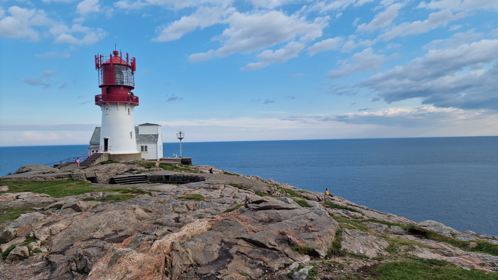
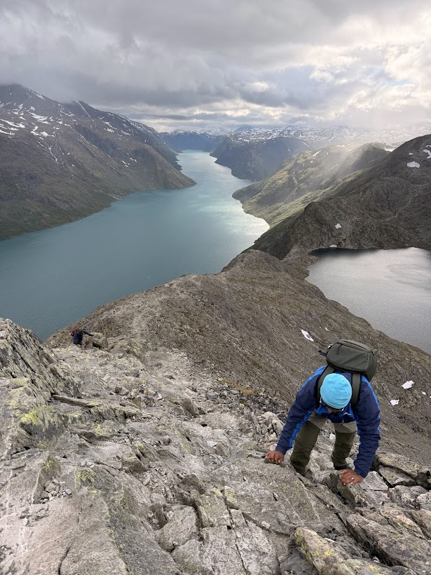
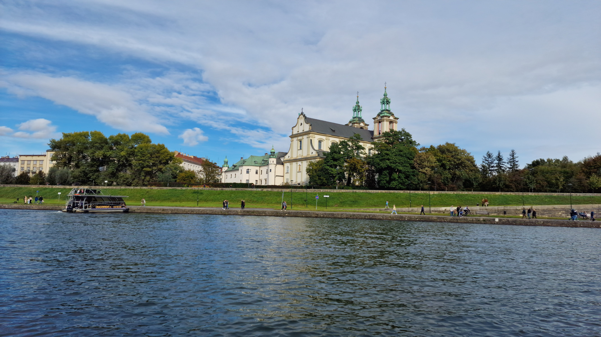
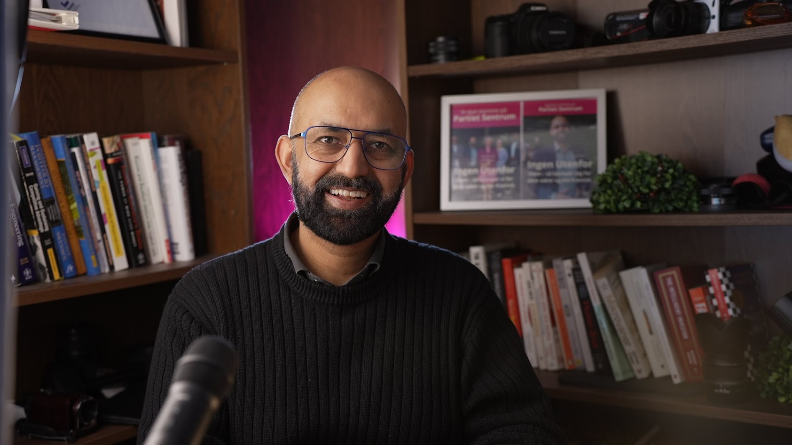

Utvalgte verker
Galleri

Landskap · Kyst
Lindesnes Fyr
Norges sydspiss mot det åpne Nordsjøen

Arkitektur · Snøhetta
Under
Verdenskjent undervannsarkitektur i Båly

Landskap · Jotunheimen
Besseggen over Gjende
Høyfjellets dramatikk og farger

Arkitektur · Kraków
Wawel-katedralen
Gotiske spir og gyllen renessansekuppel

Portrett · Ute i felt
Skaperglede på Sydspissen
Full energi og fotoglede ved havet

Arkitektur · Trondheim
Hovedbygningen NTNU
Monumental granittprakt på Gløshaugen

Landskap · Kyst
Kystlinjens ro
Stille kveldslys og blanke svaberg

By · Reise
Langs elven Wisła
Elvepromenaden ved Skałka i Kraków

Portrett · Lyssetting
Klassisk Studio Portrett
Varmt og naturlig uttrykk

Historie · Arkitektur
Slottshagene ved Wawel
Middelalderruiner og frodig parkanlegg

Landskap · Lindesnes
Blikk mot horisonten
Stillheten ute ved storhavet

Portrett · Studio
Skaperglede bak kamera
Fokus på ekte øyeblikk